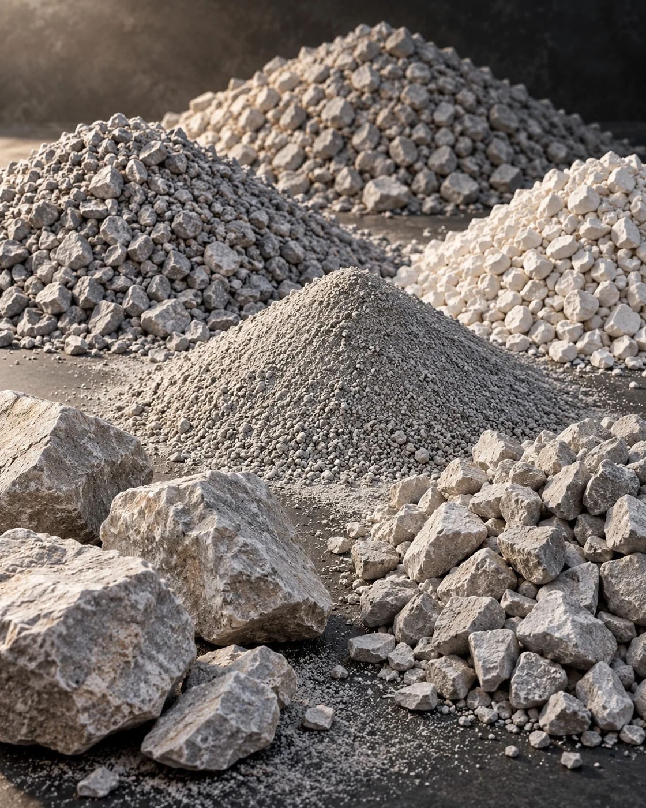
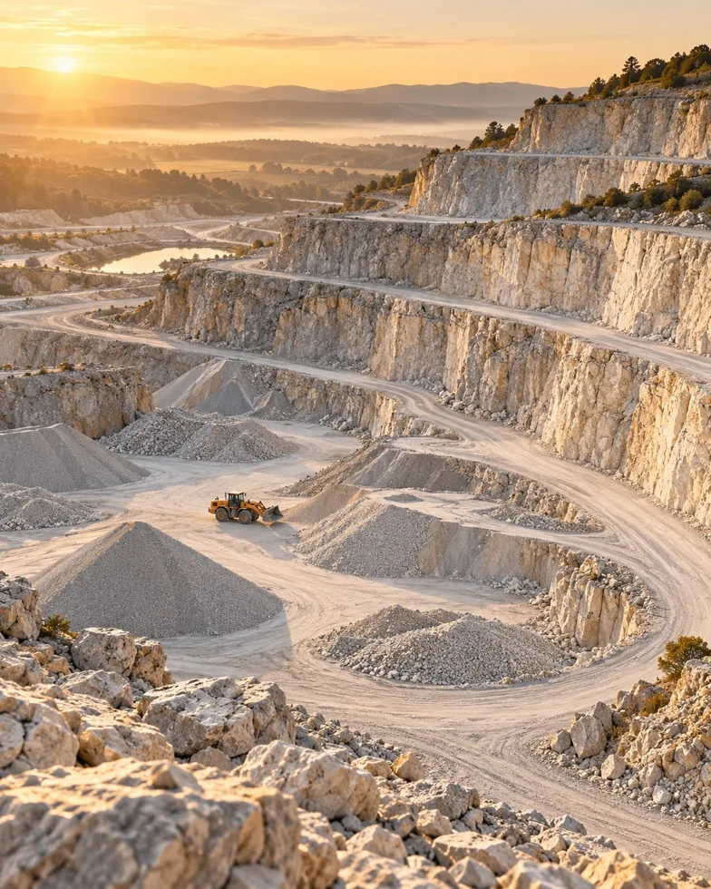
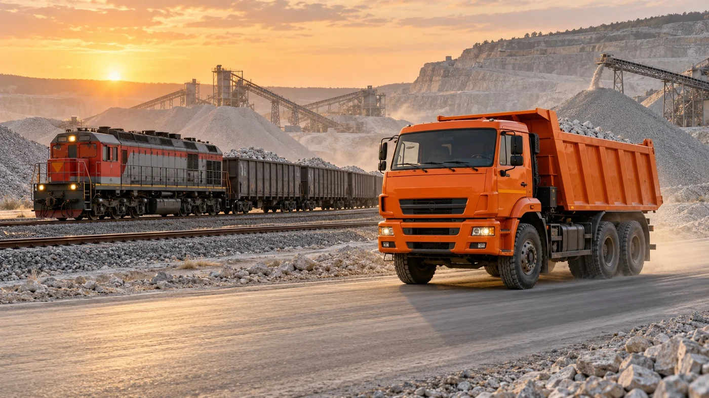

Песок из отсевов
Фракция 0–5 мм, класс II. Щебёночно-песчаные смеси С3, С4 и С5.
Щебень по фракциям, песок, строительные смеси и минеральные порошки.
Смотреть ассортимент17 позиций


Карбонатный щебень. Характеристики отгружаемой партии подтверждаются паспортом.
Карбонатный щебень. Характеристики отгружаемой партии подтверждаются паспортом.
Карбонатный щебень. Характеристики отгружаемой партии подтверждаются паспортом.
Карбонатный щебень. Характеристики отгружаемой партии подтверждаются паспортом.
Карбонатный щебень. Характеристики отгружаемой партии подтверждаются паспортом.
Дополнительная фракция по ГОСТ 32703-2014.
Дополнительная фракция по ГОСТ 32703-2014.
Дополнительная фракция по ГОСТ 32703-2014.
Фракция под заказ. Параметры партии согласуются перед поставкой.
Фракция под заказ. Параметры партии согласуются перед поставкой.
Песок из карбонатной породы. Показатели партии уточняются по паспорту.
Состав смеси согласуется по проекту и условиям объекта.
Состав смеси согласуется по проекту и условиям объекта.
Состав смеси согласуется по проекту и условиям объекта.
Поставка бута с размером камня по заявке. Для исполнения 0–700 мм указаны отдельные характеристики.

Неактивированный минеральный порошок.
По этому запросу позиций нет.
| Фракция | Исполнение | Марка прочности |
|---|---|---|
| 5–20 мм | Обычный | М1000–1200 |
| 5–20 мм | Кубовидный | М1200 |
| 20–40 мм | Обычный и кубовидный | М800 |
| 40–70 мм | Обычный | М800 |
Для этих фракций в паспортах указана морозостойкость F300. Данные по конкретной партии сверяют с её паспортом.
Фракция 0–5 мм, класс II. Щебёночно-песчаные смеси С3, С4 и С5.
Неактивированный МП-2 и микрокальцит 19 марок — от МК-5 до МК-700.

Автотранспортом до места разгрузки или железной дорогой до станции назначения.